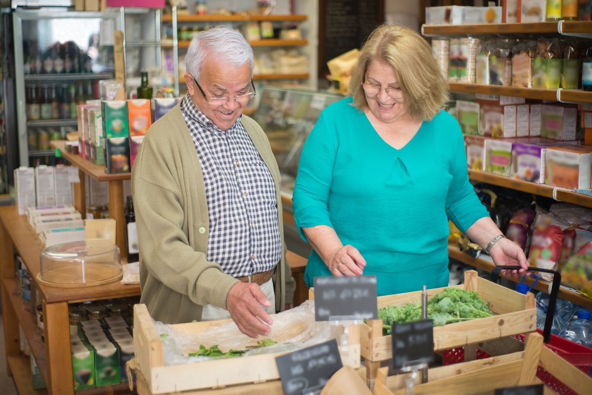

Services
Non-regulated support for home, community and daily routines
Badwi Care & Companionship keeps services simple, practical and focused on companionship, confidence and family reassurance.

Companionship
Friendly visits for conversation, emotional wellbeing, reducing loneliness and spending time together.

Sitting Service
Reassuring company while family carers take a break, attend appointments, work or manage other responsibilities.
Playing Games and Social Activities
Support with board games, cards, hobbies, gentle conversation, local outings and enjoyable routines.

Meal Preparation
Help preparing light meals, snacks and drinks, with support to keep normal food routines easier.
Cleaning and Domestic Support
Light cleaning, tidying, dishes and small domestic tasks to keep the home comfortable and manageable.

Shopping Support
Help with shopping lists, local shops, groceries and light bags, or company while shopping.

Appointment Support
Support travelling to appointments, waiting together and helping the day feel less stressful.
Community Access
Support to attend social activities, visit local places, enjoy fresh air and stay connected.

Wellbeing Checks
Friendly visits to check someone is safe, comfortable, eating, drinking and feeling connected.

Family Support
Updates and reassurance for relatives, especially when family members cannot always visit in person.
Hospital Discharge Support
Practical support after coming home, including food preparation, shopping, light domestic support, wellbeing checks and confidence building.
Need help choosing support?
Badwi Care & Companionship can talk through simple options and suggest practical companionship support.